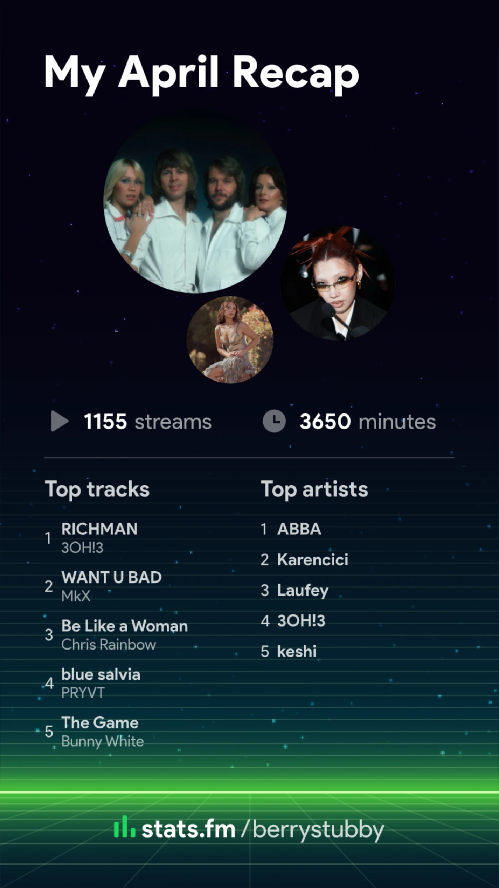

i'm sure i am not the only person on the planet who doesn't like change (·•᷄ࡇ•᷅ ) in any part of life , whether it's new people , new places , etc . when it comes to music , i often feel like i'm in an oval or oblong orbit . sometimes my musical reach goes quite far out , i collect some new tunes , maybe try a new genre . . and then i circle right back to my most comfortable and favourite playlists that i've been listening to for years („• ֊ •„)੭
i also have a tendency to hoard my treasures ( songs , playlists ) like a dragon . . (..◜ᴗ◝..) i eventually return to everything i've ever listened to in the past , so to me it's always worth saving them . for better or for worse music holds a lot of my memories , especially those that i can't recall without that melodic connection - in that sense , saving what music i like is very important to me ૮꒰ ˶• ༝ •˶꒱ა ♡
there are exceptions to the rule of course , when i find new songs that just stick in my brain and i Have to loop them until i'm sick of them . . my april recap from stats.fm shows a lot of that (˶>⩊<˶)
i'm curious what it's like to be someone who doesn't save any music they listen to . do people like that exist ? they just search up an artist , keep autoplay on and let the algorithm take the wheel ? that sounds like a nightmare to me , but to each their own (ᴗ͈ˬᴗ͈)ꕤ.ﾟ
until next time ! :3
